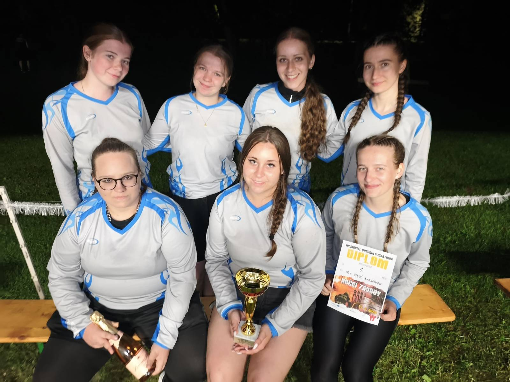
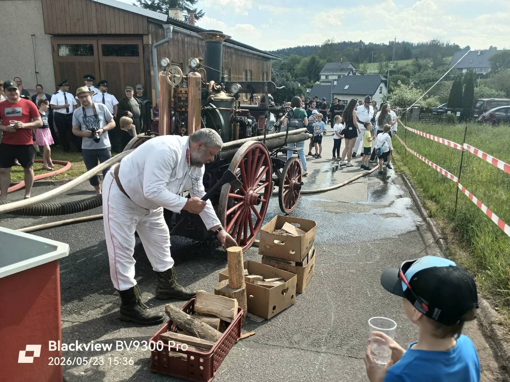
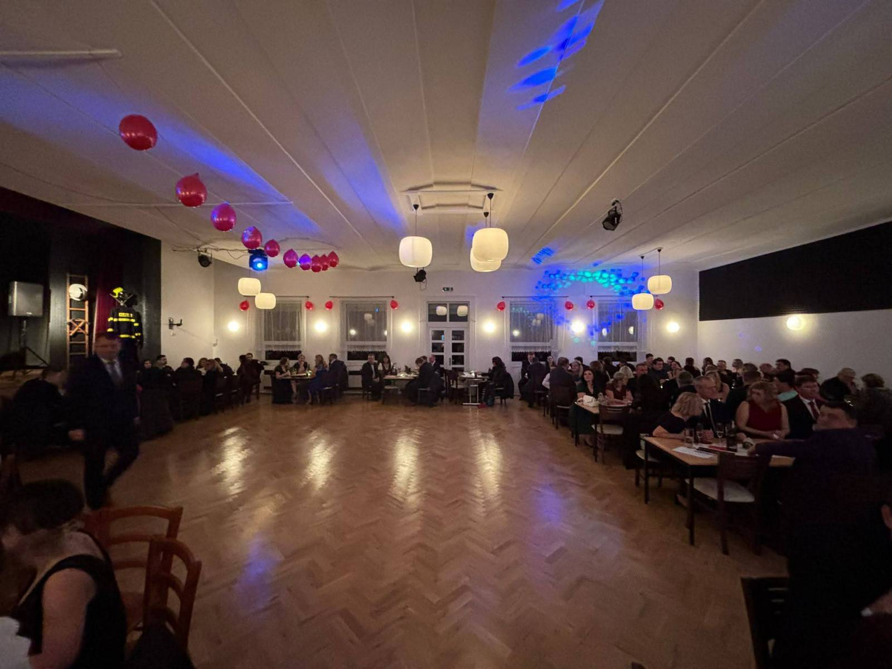

Co je u nás nového

Noční závody Rudník
27. Června se družstvo žen zúčastnilo nočních závodů v požárním útoku. Za světla pouze čelovek děvčata zaběhla osobní rekord a tím si zajistila 1. místo v soutěži.

Oslavy 25 let od založení muzea
15. května jsme uspořádali oslavy výročí založení muzea. Na návštěvníky čekala prohlídka muzea, ukázky techniky ostatních sborů, ukázka historické vojenské techniky. Při této příležitosti byla také slavnostně předán nový dopravní automobil Ford Transit. Po celou dobu bylo zajištěno bohaté občerstvení a k poslechu i tanci hrála místní kapela Na vítězství.

Hasičský ples 2026
V sobotu 7. února se v sále restaurace K Klub konal náš tradiční hasičský ples. Kromě taneční záabvy byla součástí i bohatá tombola nebo půlnoční překvapení přichystané našimi členy.
Činnost a aktivity sboru
Sbor dobrovolných hasičů ve Velkých Svatoňovicích byl založen roku 1883. Od té doby zajišťujeme požářní ochranu a účastníme se kulturních i jiných akcí v naší obci. Více o historii zde.
Každoročně organizujeme Hasičský ples, dětskou trasu na tradičním turistickém pochodu Babička a zajišťujeme bezpečnost či občerstvení na Svatováclavské pouti.
Vychováváme také novou generaci v kroužku mladých hasičů a naše sportovní družstva sbor reprezentují na závodech požárního sportu v okolních obcích.
Největší chloubou sboru však je rozsáhlé hasičské muzeum, které dobrovolně spravují naši členové. Více o muzeu zde.